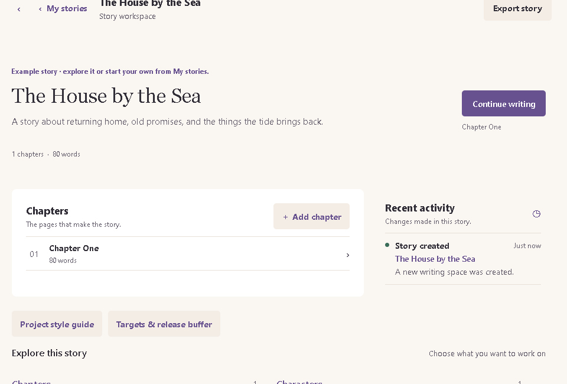
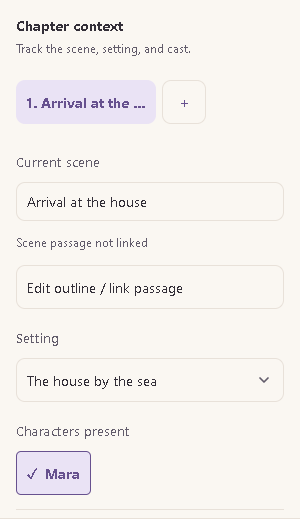
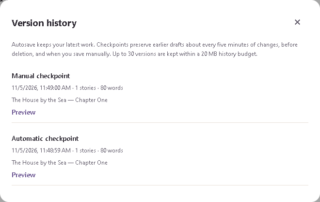

Little by Little
Web & desktop In development

A home for
the next chapter.
An offline-first workspace for manuscripts, characters, and research. I brought these tools together to keep story context close while writing, even without an internet connection.
- Local autosave, recovery, and backups help writers protect their work and revisit earlier drafts.
- Linked notes keep character and world details beside the manuscript for quick reference.
- PDF, EPUB, and Word exports make drafts easier to share and read in other tools.
- TypeScript
- React Native
- Expo
- Electron
Explore the workspace





